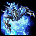
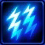
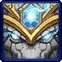
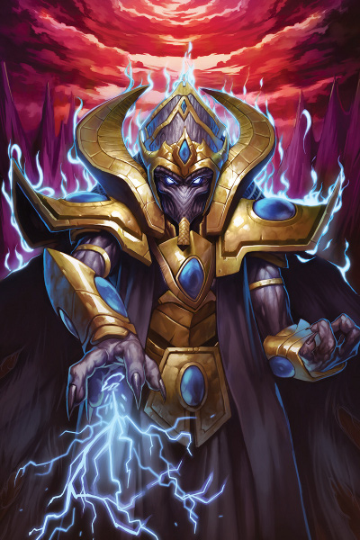
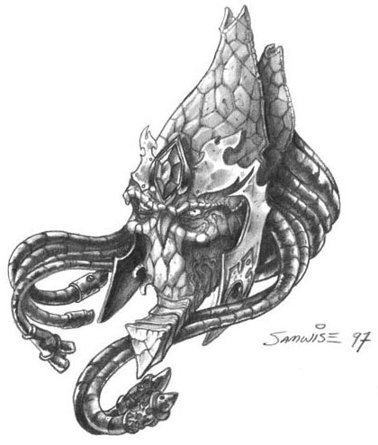

- Stats
- Abilities/Upgrades
- Strategy
- Lore
- Related
Armor: 0 |
 50/200 0.5625 per second
50/200 0.5625 per secondDamage: 0
Attacks: 0
Cooldown: 0
Targets: None
Attack Range: 0
Acceleration: 1000
Collision Radius: 0.375
Requirements: Levels 2-3 requires Twilight Council
| Level |  Level 1 Level 1 |  Level 2 Level 2 |  Level 3 Level 3 |
| Minerals |  100 100 | 150 | 200 |
| Vespene Gas |  100 100 | 150 | 200 |
| Time |  160 160 | 190 | 220 |
| Damage Bonus | 0 | 0 | 0 |
| Total Damage | 0 | 0 | 0 |
50Vespene Cost:
150Supply:
 2
2Produced From:Gateway/Warpgate Build Time:
55/5Warpgate Cooldown: 45
Requirements: Templar Archives
Warp Prism Size: 2
Unit Type: Light, Biological, Psionic, Ground
Requirements: Levels 2-3 requires Twilight Council
| Level |  Level 1 Level 1 |  Level 2 Level 2 |  Level 3 Level 3 |
| Minerals | 100 | 150 | 200 |
| Vespene Gas | 100 | 150 | 200 |
| Time | 160 | 190 | 220 |
| Armor Bonus | +1 | +2 | +3 |
| Total Armor | 1 | 2 | 3 |
Requirements: Levels 2-3 requires Twilight Council
| Level |  Level 1 Level 1 |  Level 2 Level 2 |  Level 3 Level 3 |
| Minerals | 150 | 225 | 300 |
| Vespene Gas | 150 | 225 | 300 |
| Time | 160 | 190 | 220 |
| Armor Bonus | +1 | +2 | +3 |
| Total Armor | 1 | 2 | 3 |
| Icon | Minerals | Vespene Gas | Research Time | Researched At |
|  | 0 | 0 | 0 | Already Researched |
Minerals:
Varies*Vespene Gas:
Varies*Duration:
12Information: Two of any Templar type may sacrifice themselves to merge into an Archon. This can be two High Templars, two Dark Templars, or even one of each. Upon this merge, the original Templars are lost as they become the new Archon.
Archons can be moved while morphing if they become surrounded and are colliding with other units or the environment. This allows a skilled player to break down forcefields while an Archon is still morphing.
See the Archon page for more information about the Archon.
| Icon | Minerals | Vespene Gas | Research Time | Researched At |
| 0 | 0 | 0 | Already Researched |
Cooldown:
0Range: 9
Damage: Equal to the amount of energy drained from an enemy unit
50Information: A High Templar may use Feedback on any unit that has energy, which will instantly drain all energy from the unit and deal damage equal to the amount of energy drained. This makes it useful against any caster units to not only remove their energy, but also damage if not kill them.
Buildings cannot be targeted with Feedback, but a Point Defense Drone can be. This preventing the Point Defense Drone from negating any further range attacks, as it requires energy to do so.
| Icon | Minerals | Vespene Gas | Research Time | Researched At |
|  | 200 | 200 | 110 | Templar Archives |
Cooldown:
2Duration:
4Range: 9
Radius: 1.5
Damage: 80 over 4 seconds
75Information: In order to use Psionic Storm the user has to activate the spell, and then left click where to place it. When placing the ability, a graphic shows up to better represent where the ability will be, and allows for more precise placement.
Psionic Storm does 80 damage over 4 seconds, but this damage can be reduced by a skilled player. A skilled player will move out of the storm radius, making the Psionic Storm less effective at dealing damage. A way to counteract this is to use Force Fields from a Sentry to block the enemy units from running out of the storm, or trapping an opponent by forcing them to back up into buildings and terrain to block their escape.
Psionic Storm damages ground and air units, and can also be used to damage cloaked units even if you cannot detect them. Psionic Storm does not damage buildings.
| Icon | Minerals | Vespene Gas | Research Time | Researched At |
|  | 150 | 150 | 110 | Templar Archives |
As of patch 1.3.0 Khaydarin Amulet has been removed.
If you have any suggestions for more strategies, go ahead and post on the forums 'here'!
Shift Queue Blinking
Sometimes when you have a large amount of stalkers, blinking can become more difficult and not all stalkers will end up where intended. A way to help this is to queue up a move command (to have the stalkers in range to blink), then the blink, and then another move command (to move the stalkers in front out of the way).
+1 Weapons vs Zerglings
Sum text about how gosu this is
+1 Weapons vs Zerglings
Sum text about how gosu this is
- Overview
High templar are veteran Templar who forgo the rage and traditional forms of combat common to zealots in order to better develop their psionic powers into potent tools and weapons through the Khala. Although they are equipped with light armor suits and sometimes through them, psionic blades, this is not their standard form of attack.
{kind=link}
High Templar use the archives to directly commune with their ancient ancestors and thereby gain knowledge inaccessible to ordinary warriors. They may also wear amulets carved from khaydarin crystals to improve their connection with the Khala and thus channel their psionic abilities with greater efficiency.
Those treading the path of the Khala are taught to close their minds to the outside world. For powerful psychics like the protoss this may produce psychic ripples that are harmful to other life forms. High templar are trained to focus these ripples into terrible storms of psychic energy that destroy the minds of other living creatures.
A more subtle power is the ability for high templar to create illusory duplicates of other objects. While these phantoms have no substance and cannot affect the material world, they are useful to confuse and divert the attention of the protoss' enemies.
At one time, high templar merged with another high templar to form an archon, thus sacrificing themselves to complete the Warrior Path and attain legendary status within the archives. After the Brood War, high templar could achieve this by sacrificing themselves, merging with another high templar, or with a Dark Templar.
{kind=link}
Another change brought on by the Brood War was the role of high templar politically. Previously, political decisions had been left to the Judicator Caste. With the destruction of the Conclave however and the disbanding of the Judicator, high templar have been able to take on the role of teachers and leaders of their people.
Source Information
Text information from the Starcraft Wiki.
Photo 1 created by Saejin Oh. Copyright: UDON Entertainment.
Photo 2 created by Samwise Didier. Copyright: Blizzard Entertainment.
| Protoss |
| Units |
| Nexus | Probe | Mothership |